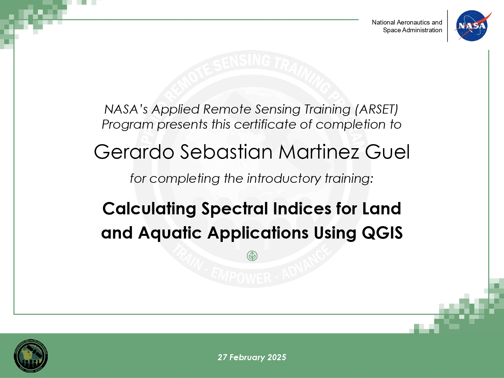
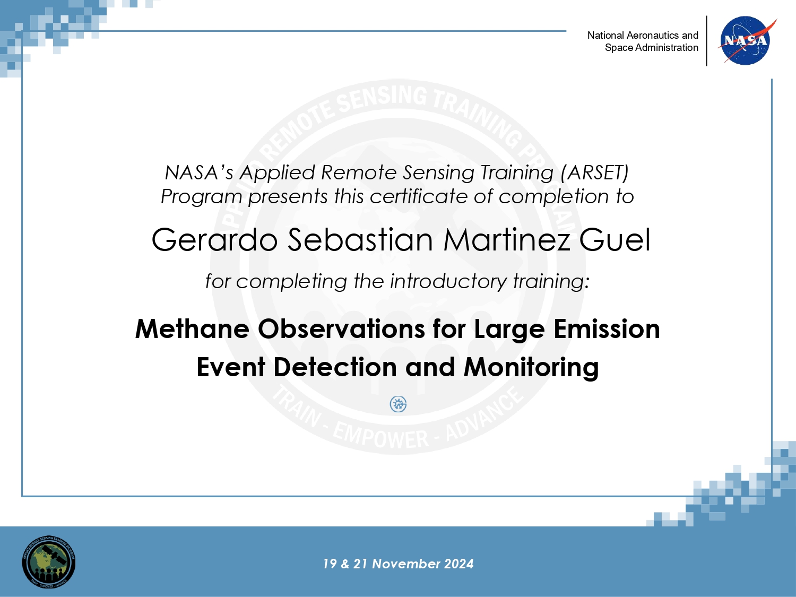
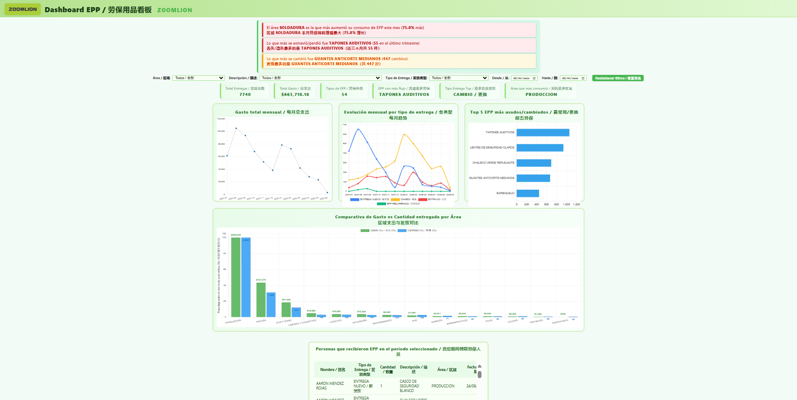
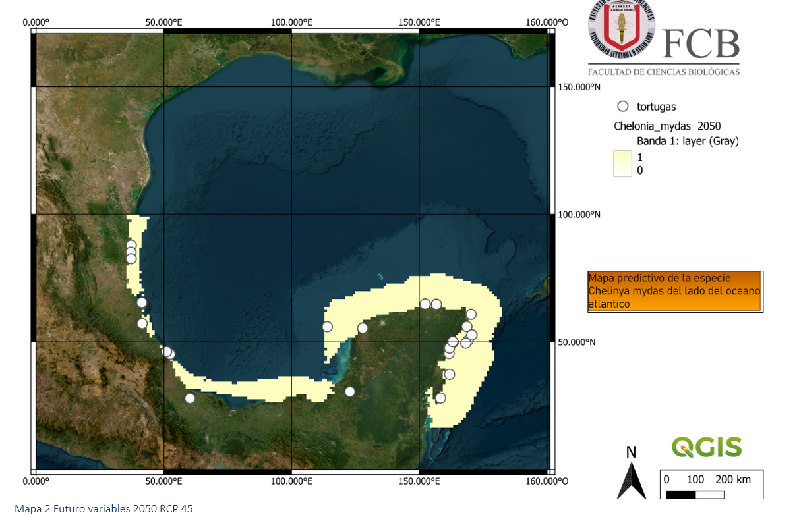
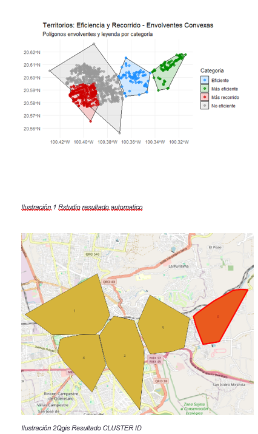

Pláticas y eventos SIG
Participo activamente en eventos, talleres y pláticas relacionados con los Sistemas de Información Geográfica (SIG) y tecnologías afines, principalmente en formato virtual. Me motiva aprender nuevas tecnologías aplicadas tanto en biología como en áreas como protección civil, medio ambiente y educación.

NASA ARSET: Calculating Spectral Indices for Land and Aquatic Applications Using QGIS

NASA ARSET: Methane Observations for Large Emission Event Detection and Monitoring
Proyectos destacados

Dashboard Dinámico de Entregas de EPP con IA
Proyecto personal para optimizar el control de entregas de EPP mediante un dashboard interactivo actualizado desde un archivo CSV. Permite visualizar quién recibe EPP, cantidades y tipo de cambio (extravio, cambio o nuevo ingreso). Disponible en GitHub Pages para acceso fácil y gratuito.
Ver Dashboard en vivo
Atlas de Riesgos Municipio de Guadalupe
Servicio social realizado en colaboración con la Facultad de Arquitectura UANL. Apoyé en la revisión y validación de cartografía (proyecciones, descripciones y atributos) para el Atlas de Riesgos de Guadalupe, asegurando la calidad geoespacial del proyecto.
*No se muestran imágenes por confidencialidad.
*No se muestran imágenes por confidencialidad.

Modelos Predictivos para Especies y Visualización SIG
Creación de modelos predictivos de distribución de especies usando variables climáticas de WorldClim. Los resultados se visualizaron y analizaron en QGIS para el mapeo ecológico y espacial.
Ver PDF del modelo teórico
Análisis de Eficiencia en Route Planning: QGIS vs RStudio

Comparativa de eficiencia entre dos métodos de planificación de rutas empleando QGIS y RStudio, evaluando resultados, tiempos de procesamiento y visualización de rutas óptimas.
Ver análisis completo (PDF)